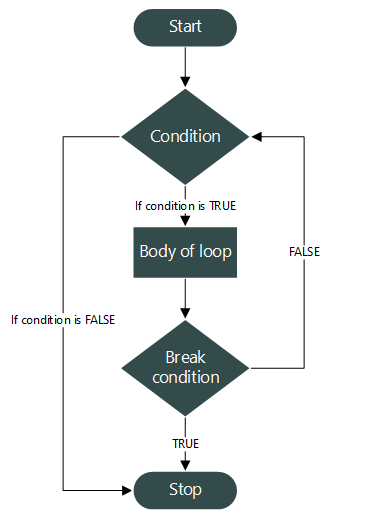
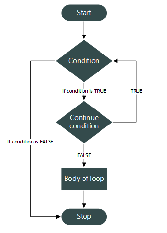

Khiem Nguyen
Lecturer in Multiscale Materials
khiem.nguyen@glasgow.ac.uk
However, we recall:
| Categories | Implemented by |
|---|---|
| Conditional statements | if, else, switch |
| Jumps | goto, break, continue |
| Function calls | function calls function(), return |
| Loops | while, do-while, for, ranged-for |
| Halts | std::exit(), std::abort() |
| Exceptions | try, throw, catch |
Our goal:
if statements and blocksC++ supports two basic kinds of conditionals - if statements - switch statements
if statement syntaxAn if statement takes the form
An if-else statement takes the form
If the condition evaluates to true, the true_statement execuates.
If the condition evaluates to false, and the optional else statement exists, the false_statement execuates.
if statement: Exampleif-else with multiple conditional statementsif-else statement that produces unexpected result
- See the runtime process in next slide!
#include <iostream>
namespace constants // This is a namespace to hold constants
{
constexpr int minRideHeightCM { 140 }; // constexpr for compile-time constant
}
int main()
{
std::cout << "Enter your height (in cm): ";
int x{};
std::cin >> x;
if (x >= constants::minRideHeightCM)
std::cout << "You are tall enough to ride.\n";
else
std::cout << "You are not tall enough to ride.\n";
std::cout << "Too bad!\n"; // focus on this line
return 0;
}if-else with multiple conditional statementsRunning the above program and making input, the output may look like this
The indentation is deceiving us here – the above program executes as if it had been written as follows:
This program do not work as expected because the true_statement and false_statement can only be a single statement. The statement to print Too bad! will always execute.
Remark
Indetation in C++ is just space and has no effect as in Python.
{...} around the code block as a compound statement.#include <iostream>
namespace constants
{
constexpr int minRideHeightCM { 140 };
}
int main()
{
std::cout << "Enter your height (in cm): ";
int x{};
std::cin >> x;
if (x >= constants::minRideHeightCM)
std::cout << "You are tall enough to ride.\n";
else
{ // note addition of block here
std::cout << "You are not tall enough to ride.\n";
std::cout << "Too bad!\n";
}
return 0;
}If the programmer does not declare a block in the statement portion of an if statement or else statement, the compiler will implicitly declare one.
is equivalent to
Most of the time, this do not matter. However, new programmers sometimes try to define variables in implicit block (see next slide).
Let us look at this program
Question If I compile and run this code, what would you expect to see?
Answer This code will not compile because x is defined in implicit blocks created by the if and else statements, making x out of scope after those blocks. In fact, x is destroyed immediately after its definition since there are no braces to create a scope that extends beyond the definition.
The above code listing is actually equivalent to this
The best argument for not using blocks around single statements is that adding blocks makes you able to see less of your code at one time by spacing it out vertically, which makes your code less readable and can lead to other, more serious mistakes.
My opinion: This argument is becoming obsolete as the monitor size and monitor resolution are becoming bigger. Therefore, we can see more chunks of code in one screen.
There are many reasons given as rationale for using blocks. We shall consider some example
Best practice
Consider putting single statements associated with an if or else in blocks (particularly while you are learning).
Look at this code snippet:
Now that we are in hurry and modify the program to add another ability:
This code snippet is essentially equivalent to
Not using blocks can make programs more difficult to debug. Let’s say we have the following snippet:
Assume that we suspect something is wrong with add_beer_to_cart() function, and we comment it out:
We’ve accidentally made check_out() conditional, which is not our intention.
if constexpr (a variant of the if-statement added in C++23) requires the use of blocks. Thus using blocks ensures consistency between if and if constexpr.
Again:
Best practice
Consider putting single statements associated with an if or else in blocks (particularly while you are learning).
More experienced C++ developers sometimes disregard this practice in favor of tighter vertical spacing.
My opinion: This reason become obsolete with massive monitors these days.
if-else versus if-ifif-else or if-if.if-else and if-if.My opinion:
switch statement basicsswitch statement: IntroductionLet us look at the program:
if-else-if statement
elif as in Python. We have to write explicitly else if.switch statement: Introductionswitch-statement that is specialized for this purpose.switch statement
switch statement: Syntaxcase-labels, the statements after the matching case-label are executed.default label exists, the statements after the default label are executed.switch is skipped.switch statement: Further infoswitch-statement is started by using the switch keyword, followed by parentheses with the conditional expression.1, 2, 3, \(\ldots\)) or an enumerated type (we will learn later).case label and default label.switch statement: Further regarding using breakIn the example about using switch, we used return-satements to stop execution of the statements after our lable.s But this also exits the entire function.
In general, we use a break statement to tell the compiler we are done executing statements within the switch, and that execution should continue after the switch block
switch statement: Further regarding case labelscase label is declared using the case keyword and followed by a constant expression.switch statement can be a math expression evaluating to an integral constant. It does not need to be a just literal constant.
switch fallthrough and scopinggoto statementsIt is avisable to avoid this unless you have a very compelling reason to use
gotostatements.
Read further from – Click on the texts; they contain links:
while statementswhile loopdo-while loopfor loopwhile statements, or while loop: Syntaxwhile statements that evaluate to false initiallywhile loop that evaluates to false immediately is often intentional (of course sometimes our stupid logical mistakes).Let at the following code in Python:
while statements that evaluate to false initiallywhile loop that evaluates to false initially is frequently used for Resource Acquisition and Validation.false from the start, and the program safely skips the processing logic.#include <iostream>
#include <fstream>
#include <string>
int main() {
std::ifstream file("config.sys"); // Attempt to open a file
std::string line;
// If the file doesn't exist, this evaluates to false immediately
while (std::getline(file, line)) {
std::cout << "Processing: " << line << '\n';
}
if (!file.is_open()) {
std::cout << "Log: Skip processing. File not found or inaccessible.\n"
}
return 0;
}Let us combine if and while statements to write something interesting.
if and while statements
#include <iostream>
// Iterate through every number between 1 and 50
int main()
{
int count{ 1 };
while (count <= 50)
{
// print the number (pad numbers under 10 with
// a leading 0 for formatting purposes)
if (count < 10)
{
std::cout << '0';
}
std::cout << count << ' ';
// if the loop variable is divisible by 10, print a newline
if (count % 10 == 0)
{
std::cout << '\n';
}
// increment the loop counter
++count;
}
return 0;
}#include <iostream>
int main()
{
// outer loops between 1 and 5
int outer{ 1 };
while (outer <= 5)
{
// For each iteration of the outer loop, the code in the body
// of the loop executes once
// inner loops between 1 and outer
// note: inner will be created and destroyed at the end of the block
int inner{ 1 };
while (inner <= outer)
{
std::cout << inner << ' ';
++inner;
}
// print a newline at the end of each row
std::cout << '\n';
++outer;
} // inner destroyed here
return 0;
}do-while statementsdo-while statementsdo-while statement is a looping construct that works just like a while loop, except the statement always executes at least once.do-while loop example
do_while_loop_example.cpp
#include <iostream>
int main()
{
// selection must be declared outside of the do-while-loop, so we can use it later
int selection {};
do
{
std::cout << "Please make a selection: \n";
std::cout << "1) Addition\n";
std::cout << "2) Subtraction\n";
std::cout << "3) Multiplication\n";
std::cout << "4) Division\n";
std::cin >> selection;
}
while (selection < 1 || selection > 4);
// do something with selection here
// such as a switch statement
std::cout << "You selected option #" << selection << '\n';
return 0;
}for statementsfor loop: Syntaxfor statement looks pretty simple in abstract:for statement works is to convert it into an equivalent while statementfor statementsKey insight
The order of execution for the different parts of a for-statement is as follows:
for loop: ExampleLet us look at a simple example
Let us convert it to the while loop
It is possible to write for loops that omit any or all of the statements or expressions.
It is worth noting that the following example produces an infinite loop:
This is equivalent to
for loops with multiple countersfor loop with multiple counters
This program will output:
for loopsbreak and continuebreak and continue: Quick recap
The
breakstatement causes awhileloop,do-whileloop,forloop, orswitchstatement to end, with execution continuing with the next statement after the loop orswitchbeing broken out of.The
continuestatement provides a convenient way to end the current iteration of a loop without terminating the entire loop.
break and continue statements within conditional statements.
break out of the loop after one first iteration.continue to make the iterations run as normal.break and continue from programming in Python. The functionalities of break and continue in C++ are essentially the same.break and continue: Flowchart
break statement
continue statementswitchbreak to avoid fall-through in switch statement.break is typically used at the end of each case to signify the case is finished.switch: Demonstrationbreak to avoid fall-through in switch statement
break_a_switch.cpp
#include <iostream>
void print_math(int x, int y, char ch)
{
switch (ch)
{
case '+':
std::cout << x << " + " << y << " = " << x + y << '\n';
// don't fall-through to next case -- Remove break to see the difference
break;
case '-':
std::cout << x << " - " << y << " = " << x - y << '\n';
break; // don't fall-through to next case
case '*':
std::cout << x << " * " << y << " = " << x * y << '\n';
break; // don't fall-through to next case
case '/':
std::cout << x << " / " << y << " = " << x / y << '\n';
break;
}
}
int main()
{
print_math(2, 3, '+');
print_math(2, 3, '-');
print_math(2, 3, '*');
print_math(2, 3, '/');
return 0;
}break to break out of a loop
break_a_loop.cpp
#include <iostream>
void print_math(int x, int y, char ch)
{
switch (ch)
{
case '+':
std::cout << x << " + " << y << " = " << x + y << '\n';
// don't fall-through to next case -- Remove break to see the difference
break;
case '-':
std::cout << x << " - " << y << " = " << x - y << '\n';
break; // don't fall-through to next case
case '*':
std::cout << x << " * " << y << " = " << x * y << '\n';
break; // don't fall-through to next case
case '/':
std::cout << x << " / " << y << " = " << x / y << '\n';
break;
}
}
int main()
{
print_math(2, 3, '+');
print_math(2, 3, '-');
print_math(2, 3, '*');
print_math(2, 3, '/');
return 0;
}A break is also a common way to get out of an intentional infinite loop.
break to break out of an infinite loop
break versus returnI believe it is easy to distinguish break from return in terms of functionalities. But just in case \(\ldots\)
break statement terminates the switch or loop, and execution continues at the first statement beyond the switch or loop.return statement terminates the entire function that the loop is within, and execution continues at point where the function was called.I believe that the difference between break and return is an easy concept for Year-3 students, but let me give a demonstration just in case \(\ldots\)
break versus return: Demonstrationbreak to break out of an infinite loop
break_vs_return.cpp
#include <iostream>
int break_or_return()
{
while (true) // infinite loop
{
std::cout << "Enter 'b' to break or 'r' to return: ";
char ch{};
std::cin >> ch;
if (ch == 'b')
break; // execution will continue at the first statement beyond the loop
if (ch == 'r')
return 1; // return will cause the function to immediately return to the caller (in this case, main())
}
// breaking the loop causes execution to resume here
std::cout << "We broke out of the loop\n";
return 0; // return 0 if we broke out of the loop and did not return earlier.
}
int main()
{
int return_value{ break_or_return() };
std::cout << "Function break_or_return returned " << return_value << '\n';
return 0;
}continue: DemonstrationQuestion: How will this programe behave?